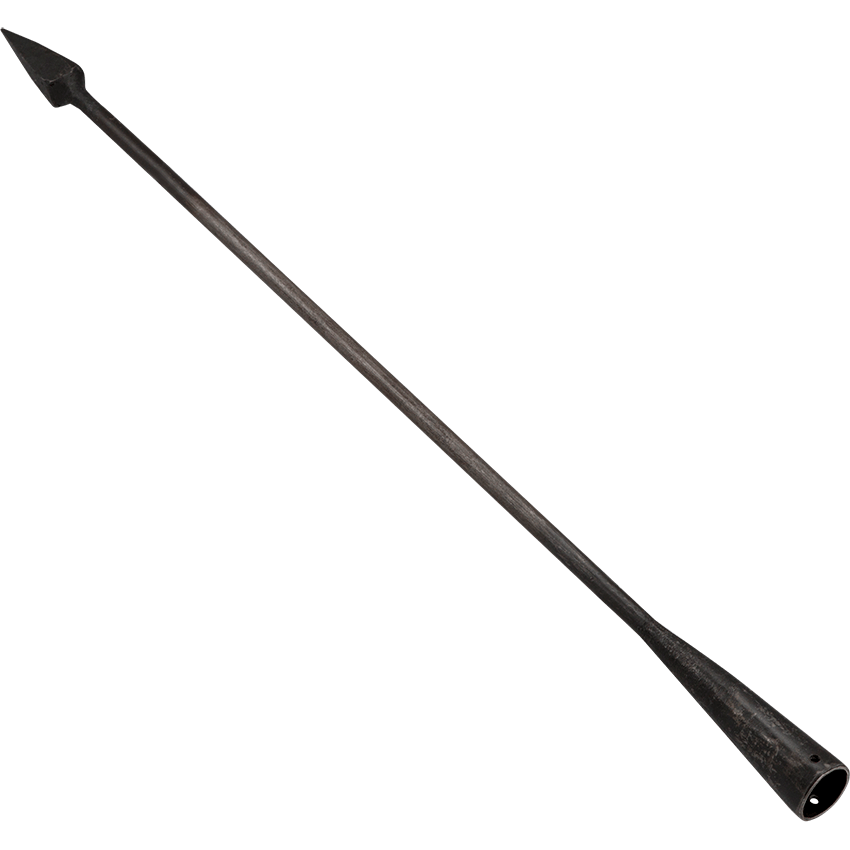

I hope this man gets a salad named after him!
In a shocking turn of events, Julius Caesar, the highly respected leader of the Roman Empire, has been assassinated. Caesar, who had just recently been declared dictator for life, was attending a meeting of the Senate when he was brutally attacked by a group of senators. Despite efforts to save him, Caesar was unable to recover from his injuries and passed away. The motive for the assassination remains unclear, but some speculate that the senators were afraid of Caesar's growing power and influence. Others believe it was a plot to restore the Roman Republic. The people of Rome are in mourning over the loss of their beloved leader. Caesar was known for his military conquests and for his reforms that greatly benefited the empire. The future of the Roman Empire is uncertain, but one thing is for sure - Caesar will be greatly missed by all. In honor of Caesar, the Senate has declared a public mourning period and has ordered that all public gatherings be cancelled for the next three days. The investigation into the assassination continues and justice will be sought for the murder of Julius Caesar.
These things give us water
Aqueducts are a very important part of our great civilization. These incredible structures bring water from distant sources to our cities and towns, providing essential life-giving sustenance to our people. The first aqueducts were built by the ancient Etruscans, who were known for their advanced engineering skills. However, it was the Romans who truly mastered the art of aqueduct construction. The Romans built hundreds of aqueducts throughout their empire, using a variety of different materials and techniques. Some of the most impressive aqueducts were built using arches and bridges, which allowed water to flow over long distances without losing its force. One of the most famous aqueducts in the Roman Empire is the Aqua Claudia, which was built by the emperor Claudius in the first century AD. This aqueduct stretches for over 100 miles and brought water from the Anio River to the city of Rome. Another notable aqueduct is the Aqua Virgo, which was built by Marcus Agrippa in the year 19 BC. This aqueduct brought water from the springs of Egeria to the city of Rome and was known for its high quality and purity. Aqueducts were not only essential for providing water, but they were also important for public health. The Romans understood the importance of clean water and built their aqueducts in such a way that they could easily be cleaned and maintained. Today, many of the aqueducts built by the Romans still stand, and they are a testament to the ingenuity and skill of our ancestors. As a society, we must continue to invest in and maintain these important structures so that future generations can enjoy the benefits of clean, reliable water.
Who is this Jesus guy?
As a reporter for the Roman Empire, I have been tasked with covering the topic of religion in Rome. Throughout the city, there are many different religious beliefs and practices. The most prominent of these is the worship of the Roman gods and goddesses, who are believed to have control over various aspects of life, such as war, love, and fertility. However, there is also a growing presence of foreign religions in Rome, such as the worship of the Greek gods and the beliefs of the Egyptian and Persian people. One of the most interesting developments in the religious landscape of Rome is the emergence of a new monotheistic religion known as Christianity. This religion, which originated in the eastern regions of the empire, has gained a significant following in Rome, with many people converting to this new way of worship. Despite the diversity of religious beliefs in Rome, there is also a sense of unity among the people, as they all strive to please the gods and seek their favor. As a reporter, I have had the opportunity to witness many religious ceremonies and festivals, and I have been struck by the passion and devotion of the people in their worship. Overall, the religious landscape of Rome is complex and varied, but it is clear that religion remains an important part of life in the empire.
What are these? Torture tools?
Recently, doctors have been using new tools such as the scalpel, forceps, and surgical needle to perform delicate operations with precision and accuracy. These tools are essential for doctors to be able to remove tumors and perform other surgical procedures. One of the most impressive surgical tools is the scalpel, which is a thin, sharp knife used to make incisions in the body. The forceps, on the other hand, are used to hold and manipulate tissue during surgery. The surgical needle is used for stitching and closing wounds. The development of these tools has allowed for more successful surgeries and has greatly improved the health and well-being of the Roman people. However, some have raised concerns about the safety and cleanliness of these tools. It is important for doctors to properly sterilize and maintain the tools in order to prevent infection and further complications. Overall, the use of surgical tools has greatly benefited the Roman Empire and will continue to do so as medical advancements continue to improve.
The weapon shack
Attention, fellow Romans! Are you tired of the same old weapons on the battlefield? Look no further, because Roman Battlefield Weaponry has the latest and greatest weapons to ensure victory in battle. Our Gladius swords are hand-forged by the finest blacksmiths, ensuring a sharp and deadly blade. And for long-range combat, our Pilum javelins are designed to pierce through even the toughest armor. But that's not all - we also offer a variety of shields to protect you on the battlefield. Our Scutum shields are made of sturdy wood and reinforced with metal, providing maximum defense against enemy attacks. Don't miss out on the chance to upgrade your weaponry and conquer the battlefield. Visit Roman Battlefield Weaponry today and join the ranks of victorious Romans. Hail victory!
The Liberator’s civil war breaks out
As a news reporter from the Roman Empire, I am saddened to report on the ongoing civil war that has erupted in the wake of Julius Caesar's assassination. Since Caesar's tragic death, the city of Rome has been divided between those who support the Liberator, Marcus Junius Brutus, and those who believe in the power of the people and support Caesar's heir, Octavian. Both sides have been engaging in brutal battles, with many innocent lives lost in the process. The once great city of Rome has been turned into a battlefield, with buildings and monuments being destroyed in the fighting. The situation is made even more tragic by the fact that both Brutus and Octavian were once friends of Caesar and were instrumental in his rise to power. However, their differing beliefs have now turned them into bitter enemies, leading to this devastating civil war. As a news reporter, it is my duty to report on the facts and present them to the people. However, as a citizen of Rome, I cannot help but feel heartbroken over the destruction and loss of life caused by this conflict. I call on both sides to put aside their differences and resolve peacefully. Let us remember the greatness of our empire and work together to rebuild and restore order to our beloved city.
Dead guys
Spartacus, the famous gladiator and leader of the slave rebellion, has been killed in battle against the Roman army, in 71 BC He was known for his incredible strength and bravery, as well as his determination to fight for the freedom of his fellow slaves. Despite his valiant efforts, he ultimately fell to the superior forces of Rome. His legacy will be remembered as a symbol of resistance against oppression. Rest in peace, Spartacus.
Julius Caesar, the famous Roman general and politician, passed away at the age of 55, in 44 BC. Caesar was known for his military victories, including the conquest of Gaul, and his rise to power as dictator of Rome. He was brutally assassinated by a group of senators on the Senate floor. Caesar will be remembered as a great leader and a transformative figure in Roman history.
Augustus, the first Roman emperor, passed away recently at the age of 75 in 14 AD. He was known for bringing peace and stability to the Roman Empire after years of civil war. Augustus will be remembered for his military victories, his reforms of the government, and his dedication to the Roman people. He will be greatly missed.